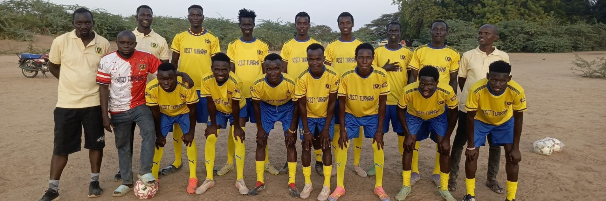

DESERT WARRIORS FC GALLERY
Explore moments, memories and activities from Desert Warriors Football Club.
Our Moments
Desert Warriors FC
Our club identity

Desert Warriors FC Team
Our players united on the field.

Desert Warriors FC Team
United team build on Passion and love

Desert Warriors FC Players & Management
United by passion, driven by purpose. A team photo bringing together the Desert Warriors FC players and management.
Club President / CEO: Mr. Joshua Taban
Team Manager: Nicholars Otwane
Head of Club Operations: Alex Lokwee

Thank You to Our Supporters
A special message of appreciation from Desert Warriors FC to everyone who supported the club throughout last season.
We sincerely thank our loyal fans, partners, families, players, staff and the entire community for standing with us throughout the season.
Your encouragement, belief and support gave the team the strength to keep fighting, growing and representing our community with pride.
From the entire Desert Warriors FC family — thank you for being part of our journey.

Always Looking Good in Yellow 💛
Yellow is more than a colour — it represents the pride, passion and warrior spirit of Desert Warriors FC.
Come on, Desert Warriors! Keep fighting, keep believing and keep representing our colours with pride.
#COYDWFC 💛💚 #DesertWarriorsFC
New Jerseys, New Season
The Desert Warriors FC boys doing warm-ups after receiving their new jerseys for the season.